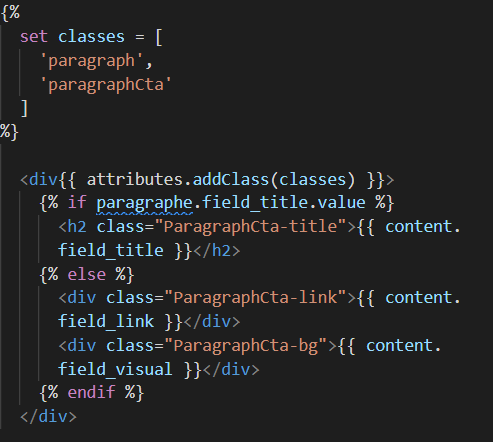

Insérer un lien canonique pour nodes dans les pages
a href="{{ url('entity.node.canonical', {'node': news.id})}}" >{{ news.label }}
Nomenclatures des classes après récupération

Setter la classe
Pour setter la classe on effectue un set Classe avec 2 noms: celui de l'ensemble d'éléments et celui de l'élément
{%
set classes = [
'paragraph',
'paragraphCta'
]
%}
Puis dans le twig on récupère le nom de l'élément : "nom de l'élément" tiret "le plus petit ensemble"
Nomenclatures des classes construites intégralement
Exemple du master
div class="NodeNews-headerWrapper NodeHeader"
div class="NodeHeader-cover"
h1 class="NodeHeader-title"
div class="NodeHeader-date"
div class="NodeNews chapo"
div class="ParagraphsWrapper NodeNews-content"
Niveau 1 : Les containers
class="NodeWrapper NodeEdito"
On les note avec : "le nom de l'entité + Wrapper" suivi par "L'entité + le bundle"
Niveau 2 : Le sous_container
class="NodeEdito-headerWrapper NodeHeader"
On récupère : "L'entité+Bundle" tiret "position+wrapper" suivi par "l'entité+élément"
class="NodeEdito-chapoWrapper NodeChapo"
On récupère : "L'entité+Bundle" tiret "élément+wrapper" suivi par "l'entité+élément"
class="NodeEdito-contentWrapper NodeContent"
On récupère : "L'entité+Bundle" tiret "élément+wrapper" suivi par "l'entité+élément"
Niveau 3 : Les éléments
class="nodeHeader-cover NodeCover"
On note ""entité+élément" tiret"position" suivi par "entité+position"